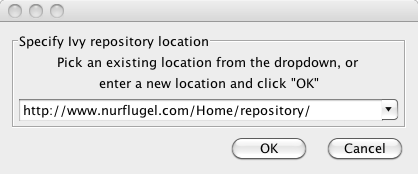
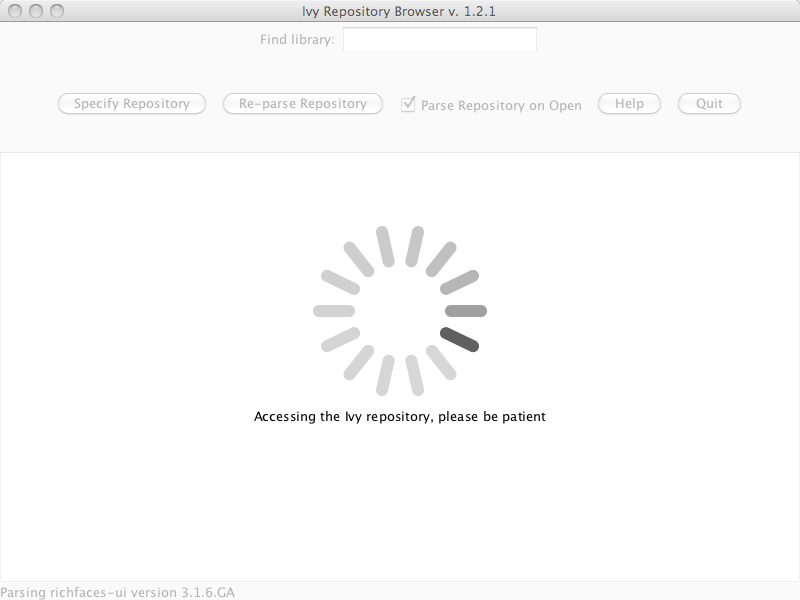
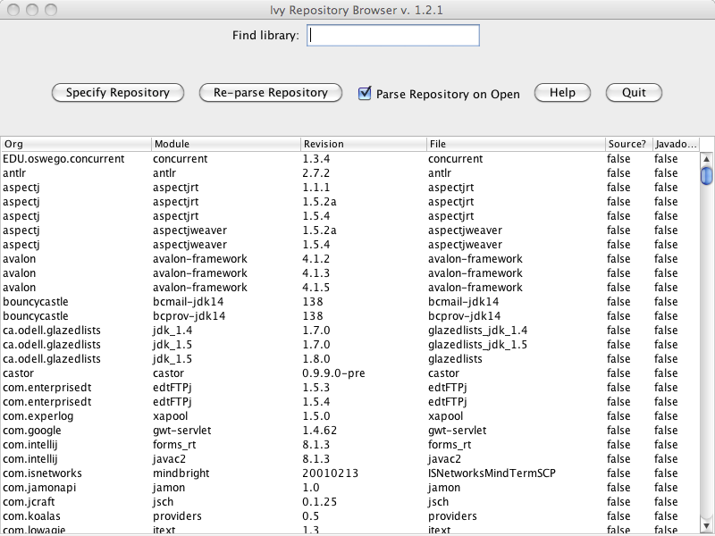
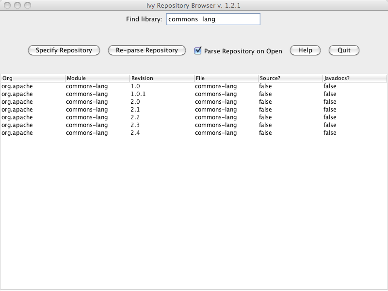
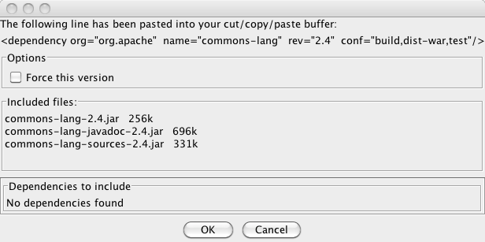
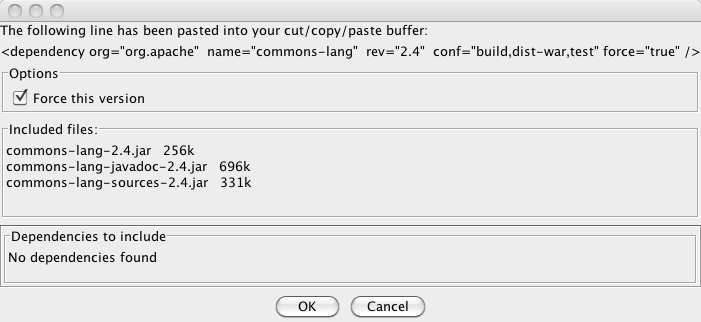
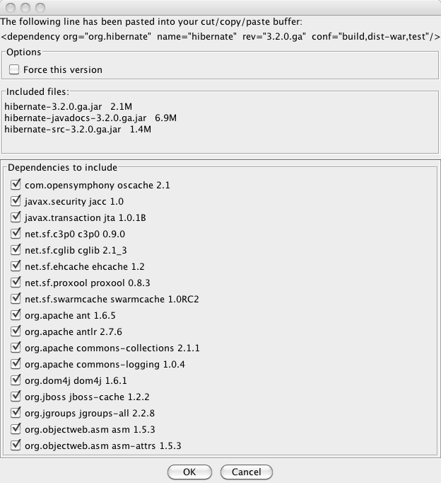
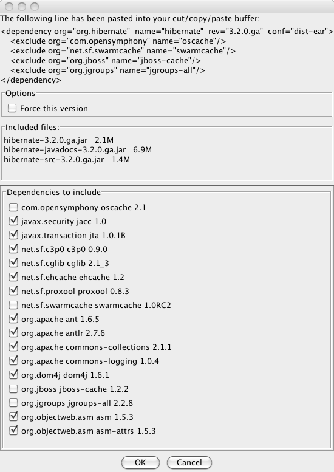
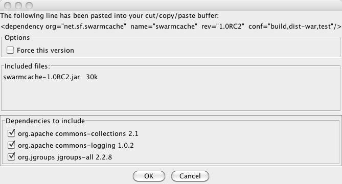

Ivy Browser
Using Ivy Browser
If you fired up the program, you should see the following:
The first time you run the app, you need to set the location of the Ivy
repository or repositories (yes, you can have more than one, but you
can only use one at a time). Click on the "Specify Repository" button:

Enter a URL for your repository. You can either select an existing value in the dropdown if needed, or type a new one, which will get added to the dropdown.
Once you've added your repository location, you don't need to change it, unless you switch repositories. It will persist across invocations.
Click the "OK" button to start parsing the repository. This may take
some time, depnding on the size of the repository and network speed.
It's multithreaded, so on a local network it really flies.
You'll see the spinner go as it parses entries, and the entries are listed on the status bar at the bottom:

Once the respository has been parsed, it's contents are visible in
the table. The results are cached on the hard drive, so the next time
it runs it'll open after only a second or two.
Note the "Parse Repository on Open" checkbox - you'll probably want
this unchecked, unless you want to always get all the new items in the
repository on load (I've got a todo for doing that in the
background). Of course, you can always get the latest results by
clicking on the "Re-parse Repository" button.

As nice as this looks, it isn't very navigable. Type some key words in the "Find library" textbox, like "commons lang"

Note that just the items with "commons" or "lang" are visible. You can filter off of org, module, or revision.
Now the fun begins - click on a row (in this case, commons-lang 2.4) -
you get a dialog showing you what's in Ivy, and all the jars that will
be brought in:

Clicking on the "OK" button closes the dialog, and you've now got that entire line of XML in your copy/paste buffer, ready to paste into your Ivy file!
Selecting the "Force this version" checkbox adds the "force=true" snippet:

But wait, there's more!
Let's select "hibernate 3.2.0", and see the dialog:

We can now see all depencencies that Hibernate brings in, and there are
there are a bunch of things we don't want in there - we only want one
cache implementation. We just have to unselect the checkbox for the
ones we don't want, and the XML will reflect that:

But wait, there's still more!
Right click on the line for swarmcache, and another dialog comes up for it, so you can see what it brings in:

Wasn't that easy?